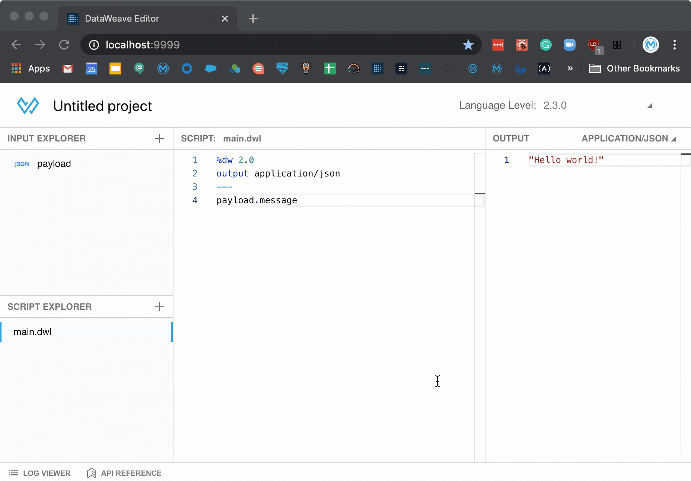

Getting Started with Data-Weave
Written on 2020-05-24
Table of Contents
Environment Setup
Anypoint Studio
Your go to IDE for using DataWeave should always be Anypoint Studio - this is the only official way to work with Mule (outside of design center at least). No other environment is going to give you access to all of the features of data-weave, and no other environment is going to guarantee that your data-weave behaves as expected when moved into production.
The two most common arguments against studio that I hear are that it is either too slow / resource intensive, or that the experience isn't as good as the web based playground. Here are a couple of ideas to improve your experience.
Use a separate workspace or project. If you find studio to be too slow or non-responsive when working with DataWeave, consider using a separate workspace just for your DataWeave. When you have a multiple projects in studio, the background tooling is constantly running to validate / resolve metadata. The less you have open, the faster it's going to run! So if you're working on a complicated DataWeave for a project, separate it out into a separate project and close your main project. This also sets you up for creating reusable data-weave module if that's the route you decide to go!
Add a transform message component. Think the three panel experience the playground gives you is better? Guess what, studio can do it too! Just throw a transform message component in your project, double click the component properties tab, and turn on preview!

There you go, full screen code editing! Your sample payload is on the left (if you haven't set it yet, it will prompt you for a data type first), and all functionality of data-weave is still supported, such as importing modules, custom flat file formats, every single output writer, etc.
Data-weave playground
The playground is NOT an official tool and is not supported by Mulesoft. The playground is a hobby project written by someone with a passion for DataWeave, but you shouldn't be using it for anything other than quick snippets

So I just got done telling you to do all of your data-weave development in studio, and now I'm talking about the web-based playground. What gives? Well, one good reason to use the playground is for testing in specific snapshots of DataWeave; I personally keep the latest DW2.X version and the latest DW1.X version. I typically find myself going to the playground when writing up a snippet for someone on stack-overflow or to answer a question on slack - you just can't beat how quick it is. What I'm not doing is writing data-weave intended for a project; I can't setup proper folder structures, unit testing, logging, etc. It only makes sense to me for quick, short snippets.
The playground is a docker image; if you don't know what docker is or how to use it, start here.
You can find the list of DataWeave playground tags here.
To quickly launch the 2.3.1 playground for one-time usage:
docker run --publish 9999:8080 machaval/dw-playground:2.3.1-SNAPSHOTAnd now you can access the playground at http://localhost:9999
To launch 2.3.1 as a named, detached playground which will start with your system:
docker run --detach --publish 8080:9999 --name dw-playground-2.3.1 --restart unless-stopped machaval/dw-playground:2.3.1-SNAPSHOTPick whichever snapshot you want to use from the tag list and get going with it. I'm not going to go any further into the playground as it is pretty straightforward - and pretty limited. If you run into issues with the playground, I suggest moving your work to the studio as the playground is not supported.
Syntax Basics
What the heck is the ---?
data-weave
%dw 2.0
output application/json
var numbers = 1 to 30
---
numbers map do {
var prevNumber = numbers[$$-1]
---
$ + prevNumber
}So what exactly does the
--- we see above mean? For a scoped expression, it represents the separation of the head and body. The body of an expression must yield a value. That makes it rather difficult to do things like setting a variable... which is where the head comes in. If you need to set a variable, define a function, etc, you get it done in the head. The do { } creates a new scope in which we can put another head/body, allowing us to set variables and make use of them in the body of expressions. Here is a real world example (with all the messy bits removed) showing why this is useful:data-weave
%dw 2.0
output application/json
var doCalc = (item, previousItem) -> item
---
payload orderBy $.transactionDate map do {
var calc = doCalc(item, payload[max([0, $$-1])])
---
($ - "customAttributes") ++ "customAttributes": ({
"adjustedQualifyingFills": calc.adjustedQualifyingFills,
"adjustedEarnLevel": calc.adjustedEarnLevel
})
}As you can see, we are now able to create a scope in our main body, with its own head/body, allowing us to call a function, get a result, and then make use of that in our
map. Neat.Anonymous/lambda functions, and their syntax sugar - $, $$..
In data-weave examples, you probably see things like this a lot right?
data-weave
%dw 2.0
output application/json
var items = 1 to 10
---
items map ($$): $Which results in:
json
[
{ "0": 1 }, { "1": 2 }, { "2": 3 }, { "3": 4 }, { "4": 5 },
{ "5": 6 }, { "6": 7 }, { "7": 8 }, { "8": 9 }, { "9": 10 }
]Yeah.. ok.. but where exactly did the
$ and $$ come from, and what do they mean?First, lets talk about infix notation vs prefix notation. We know that
map is a function which takes parameters Array<T> and Function. You can just take a look at the documentation here to see that. If you're coming from another language, you'd probably expect to call it like this:data-weave
%dw 2.0
output application/json
var items = 1 to 10
var myMapFunction = (item, index) ->
(index): item
---
map(items, myMapFunction)Well, this is valid in DataWeave!
This is known as prefix notation - our function followed by our inputs. If you've been doing software development for a while, prefix notation makes sense - its how we do things! For most people though, infix notation, which looks like
X + Y, where our function/operator is between our inputs, makes a lot more sense. We say X plus Y, not plus X, Y. With DataWeave, we can use infix notation for any function that takes exactly two parameters. Take orderBy - it requires an Array and a Function as input; exactly two. This also allows us to chain our functions:data-weave
payload orderBy $.transactionId map $.messageWhat we're saying here is
payload ordered by transactionId, and then mapped to an array of the object's messages. With function chaining, we take the result of each function and use it as the first parameter of the next function. There are some precedence rules you should keep in mind, which you can find here; if you're getting an error about incorrect types with function chaining, 9/10 times you're facing a presedence issue and wrapping with ( ... ) can fix it.Ok - we've covered infix notation which explains a good bit about whats going on.. but that still doesn't tell us what
$ and $$ stand for! These are what are known as syntax sugar. They exist to make our code more concise and easier to understand (at least once you understand what they're doing) by allowing us to only define the body of our anonymous functions. Lets take our example before, where we had:data-weave
var myMapFunction = (item, index) ->
(index): itemInstead of defining this function in the header, we could actually do it inline as an anonymous function:
data-weave
payload orderBy $.transactionId map ((item, index) ->
(index): item
)Why not make it a little more concise? We find ourselves making anonymous functions so often, it would be really nice to just supply the body of the function, rather than the entire lambda. Well, DataWeave allows us to do this.. and says, assign
$ for the first parameter, $$ for the second, $$$ for the third.. noticing the pattern here? The $ provides anonymous access to the parameters, where the number of $ symbols represents the position of the parameter.. since map takes a function with (item, index) as its parameters, $ becomes our item and $$ becomes our index.What about nested functions? Well, how can you tell the
$ from the outer function and the $ from the inner function? You can't, which means you won't be able to reference the outer function's parameters. When working with nested functions, even if you don't need the outer function's parameters, I would recommend using a lambda with named parameters to keep things clear. Code that is easier to understand trumps code that is more concise - it all compiles the same!{( ... )} - What magic is this?!
If you're familiar with javascript, you should be familiar with object deconstruction as it's become an extremely common pattern. Well, DataWeave can do it too!
Here is our first example, deconstructing one object in order to build a new one:
data-weave
%dw 2.0
output application/json
var items = [{ id: 1, message: "Hello world!" }, { id: 2, message: "Goodbye world!" }]
---
items map {
($),
destination: "dest1"
}And we get the output:
json
[{
"id": 1,
"message": "Hello world!",
"destination": "dest1"
},
{
"id": 2,
"message": "Goodbye world!",
"destination": "dest1"
}]As you can see, we've deconstructed the key-value pairs of the object, allowing us to preserve the original object in our new object. To better illustrate what this is doing, let's change it up a bit.
data-weave
%dw 2.0
output application/json
var items = [{ id: 1, message: "Hello world!" }, { id: 2, message: "Goodbye world!" }]
---
{(items)}As output we get:
json
{
"id": 1,
"message": "Hello world!",
"id": 2,
"message": "Goodbye world!"
}As you can see, we can deconstruct arrays too - we've deconstructed our array of objects into a single object of key value pairs. The gist is that when
( .. ) is contained within { .. }, the contents get deconstructed. Combined with the ability to remove specific keys from an object, this makes it very easy (well, as easy as it got pre update) to update a key by removing it and then reconstructing it with the new value.Must Know Functions
map
Easily the most used function in DataWeave, the
map function iterates through our array, calling a function passing in the item and index, and returning the results as an array.data-weave
%dw 2.0
output application/json
var items = 10 to 100
---
items map {
index: $$,
value: $
}Results in:
json
[
{
"index": 0,
"value": 10
},
{
"index": 1,
"value": 11
},
{
"index": 2,
"value": 12
},
...Map is iterating every item, and we're mapping it into a new item with the keys
index and value. Remember though, Data is immutable in data-weave, so we aren't changing the array in place, so we have to yield a new item which is included in our resulting array!mapObject
mapObject allows us to iterate all of the key:value pairs of an object. $$ is our key, $ is our value, and $$$ is our key:value index. mapObject takes in an object and should yield an object.A real world use case might be doing something like taking the result of a scatter-gather, and flattening it into a single object of
key:value pairs. We can easily do this by doing a mapObject and deconstructing our payloads (of course, if you go learn your selectors, you could also accomplish this more succinctly).Input:
json
{
"0": {
"payload": {
"firstName": "Mike",
"lastName": "Jones"
}
},
"1": {
"payload": {
"Line1": "555 Main Street",
"Line2": null,
"City": "Atlanta",
"State": "GA"
}
}
}DataWeave:
data-weave
%dw 2.0
output application/json
---
payload mapObject {( $.payload )}Transforms to:
json
{
"firstName": "Mike",
"lastName": "Jones",
"Line1": "555 Main Street",
"Line2": null,
"City": "Atlanta",
"State": "GA"
}match
Putting them together for a recursive pattern..
Now that we know
mapObject, map, and match, we can put them together for a basic recursive pattern that allows us to touch the entire structure of our object.data-weave
%dw 2.0
var diveObject = (p: Any) ->
p match {
case p is Array -> p map diveObject($),
case p is Object -> p mapObject ($$): diveObject($),
else -> $
}To break this down, we're creating a function and saying (1) when
p is an Array, iterate through each element of the array and call diveObject on it; (2) when p is an Object, iterate through each key:value pair, reconstructing it with the original key and then calling diveObject on the value; and (3) when it isn't an Object or Array, just yield p. As this runs through recursively, if the value of a key:value pair is another Object or Array, it will now start traversing it, so on and so forth, until it has iterated the entire structure.This is a fairly common pattern you'll see in DataWeave.
Let's consider a use case where we want to find ALL values of Cat, regardless of where in the object it is, and change it to Dog.. pretty easy with this pattern!
data-weave
%dw 2.0
var imADogPerson = (p: Any) ->
p match {
case is Array -> p map imADogPerson($)
case is Object -> p mapObject ($$): imADogPerson($)
else -> if (lower($) == "cat") "dog" else $
}
output application/json
---
imADogPerson(
{
"allowedSpecies": [
"fish",
"dog",
"cat"
],
"myPet": "cat",
"petsInMyBuilding": [
{
"name": "bob",
"species": "fish"
},
{
"name": "lyla",
"species": "cat"
},
{
"name": "roxy",
"species": "dog"
}
]
}
)Which results in:
json
{
"allowedSpecies": [
"fish",
"dog",
"dog"
],
"myPet": "dog",
"petsInMyBuilding": [
{
"name": "bob",
"species": "fish"
},
{
"name": "lyla",
"species": "dog"
},
{
"name": "roxy",
"species": "dog"
}
]
}Ok, ok.. I promise I like cats too!! As you can see though, this is a powerful pattern in which we can manipulate the entire structure of an object quickly, and easily. One of my CookBook examples shows you how to append an XML namespace on very object key as simply as:
data-weave
payload appendNamespace temFor more complicated usages, where you only want to update a specific key at a specific level, we have the new update function which you can find in the docs.